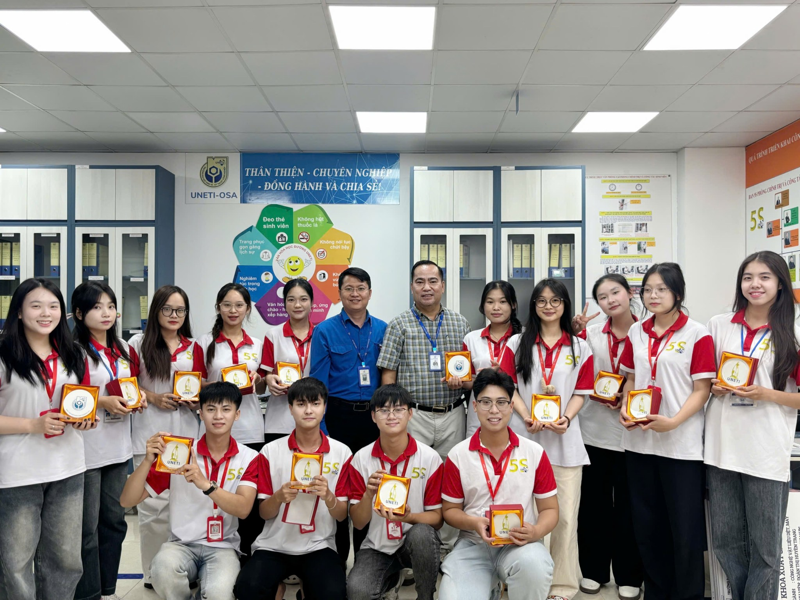
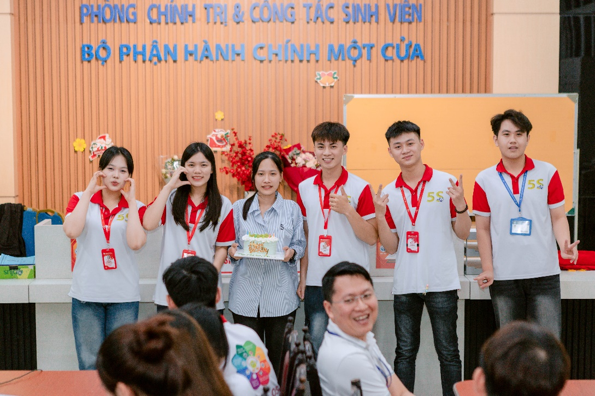
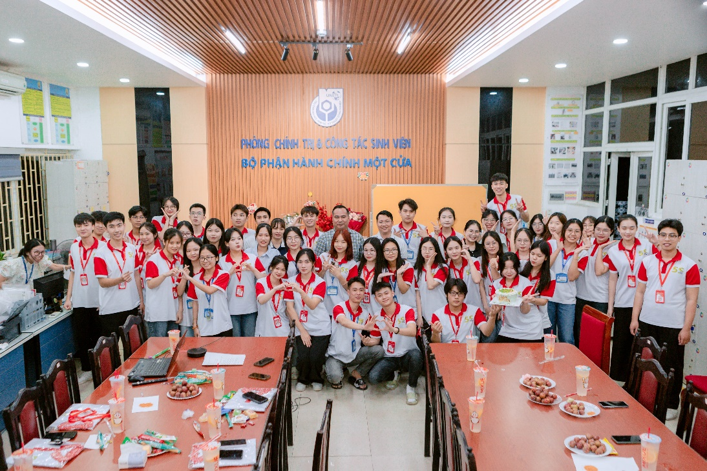
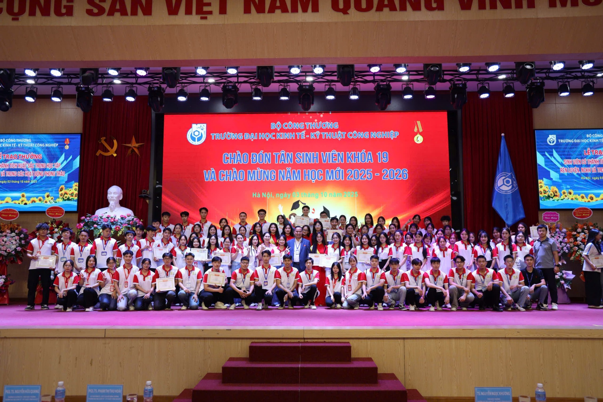
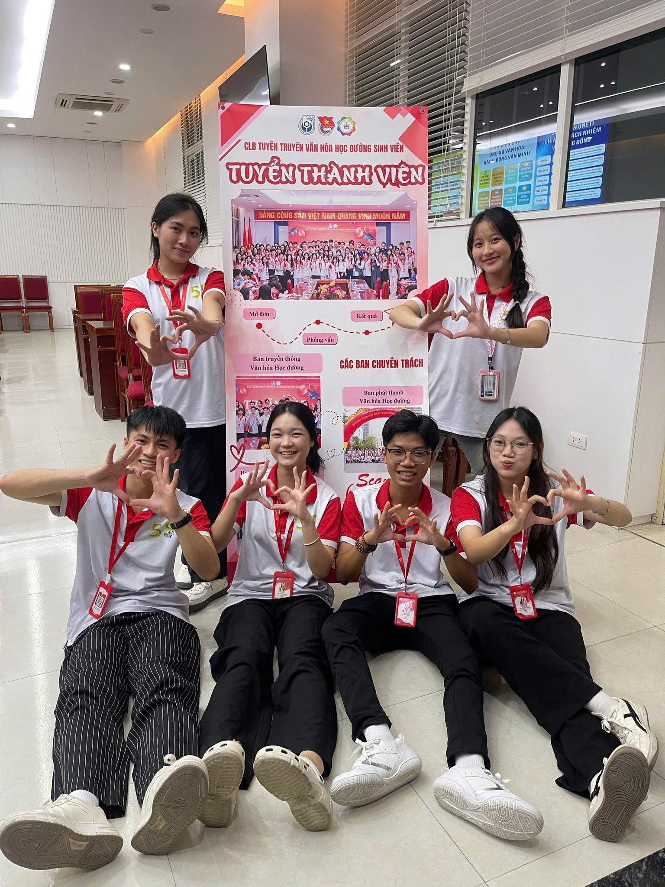
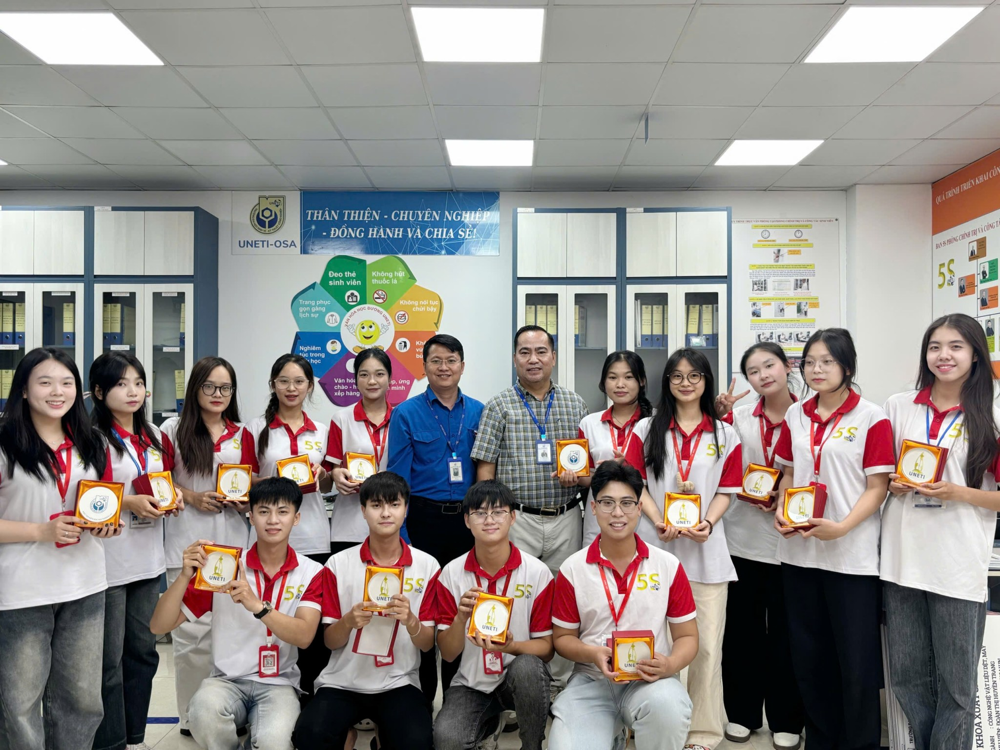
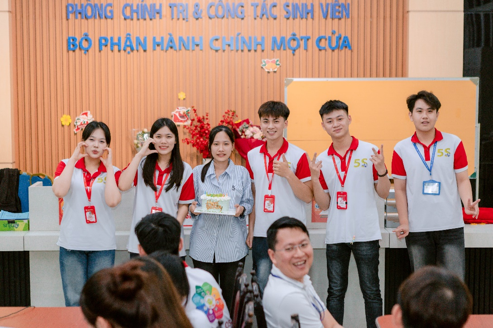
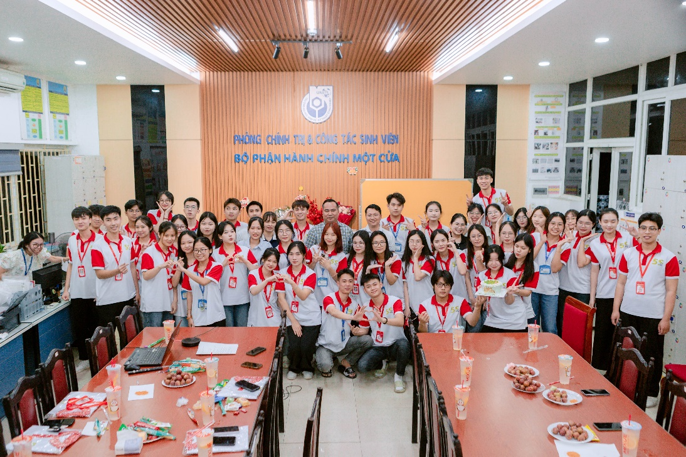
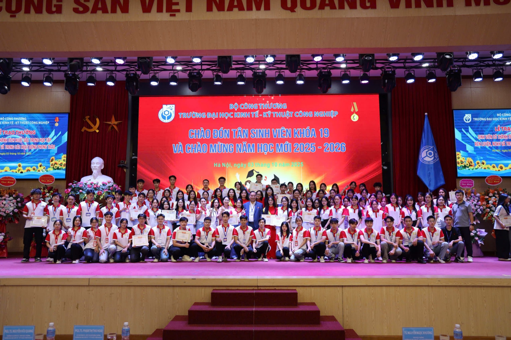
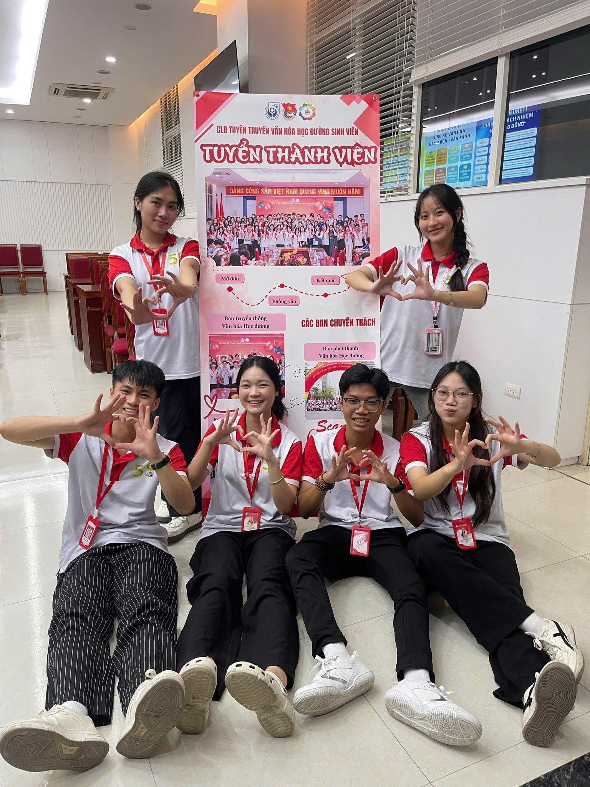

Luôn phấn đấu bền bỉ, gương mẫu và đầy nhiệt huyết
Trong hành trình tuổi trẻ, có những người chọn đứng yên, nhưng cũng có những người luôn tiến về phía trước với tất cả nhiệt huyết, khát vọng cống hiến và rèn luyện để xứng đáng đứng trong hàng ngũ của Đảng Cộng sản Việt Nam, tại UNETI, Mạch Hùng Phong – lớp DHTD18A2HN, Khoa Điện – Tự động hóa chính là một trong những gương mặt tiêu biểu như thế.
Từ những ngày đầu làm quen với môi trường đại học, Phong đã nuôi dưỡng trong mình lý tưởng được cống hiến sức trẻ cho tập thể, cho Nhà trường và xa hơn là cho Tổ quốc, Em lựa chọn đồng hành cùng Câu lạc bộ Tuyên truyền Văn hóa học đường Sinh viên (SCC) – nơi rèn luyện tác phong gương mẫu, tinh thần kỷ luật và hình ảnh chuẩn mực của người sinh viên UNETI. Phong chia sẻ: “Em được kết nạp từ khi được ngồi trên ghế nhà trường. Em gieo ước mơ đó khi vào đại học. Em chọn CLB Tuyên truyền Văn hóa học đường Sinh viên (viết tắt là: SCC) là nơi cho em cơ hội tổ chức hoạt động, đứng trước mọi người để truyền tải thông điệp, từ đó em học được sự tự tin, khả năng quản lý công việc và ý thức giữ gìn hình ảnh của sinh viên, điều mà một đảng viên trẻ càng cần phải có. Sự dìu dắt, chỉ dẫn của Thầy cô, anh chị là những gì em luôn và dặn lòng mình phải thật cố gắng trong suốt những ngày tháng đi học. Để bản thân luôn trở thành phiên bản tốt hơn của ngày hôm qua."
 









Bên cạnh đó, em còn tích cực trong CLB Street Workout – môi trường giúp Hùng Phong rèn luyện thể lực, ý chí và sự bền bỉ. “Street Workout cho em những người bạn cùng đam mê và cùng rèn luyện. Em học được sự kiên trì, kỷ luật và tinh thần vượt giới hạn, những phẩm chất mà em tin sẽ giúp mình cống hiến lâu dài trong hàng ngũ Đảng” – Phong tâm sự.
Các bạn cùng học và hoạt động nhận xét: “Phong là người nhiệt tình, trách nhiệm và luôn đặt lợi ích tập thể lên hàng đầu. Ở SCC, Phong gương mẫu và chỉnh chu trong mọi hoạt động; ở Street Workout, Phong là người lan tỏa tinh thần rèn luyện và ý chí kiên trì. Cả hai môi trường này đều chứng kiến sự trưởng thành rõ rệt của một đảng viên trẻ.
Ngày 17/8/2025, minh chứng cho sự cố gắng, rèn luyện không ngừng của chính bản thân, Phong đã được chuyển sinh hoạt Đảng chính thức và sinh hoạt tại chi bộ Phòng Chính trị và Công tác Sinh viên. Đây không chỉ là một cột mốc ý nghĩa, mà còn là kết quả của quá trình phấn đấu, rèn luyện và thể hiện phẩm chất, đạo đức của một thanh niên ưu tú.
Phong khẳng định: “Tuổi trẻ là thời gian để rèn luyện và cống hiến. Là đảng viên trẻ, em càng phải giữ vững lý tưởng, không ngừng học hỏi và phấn đấu để trở thành phiên bản tốt hơn mỗi ngày, góp sức xây dựng tập thể vững mạnh và đất nước giàu đẹp.”

Mạch Hùng Phong – một đảng viên trẻ đầy nhiệt huyết, trách nhiệm và khát vọng – chắc chắn sẽ tiếp tục để lại những dấu ấn rực rỡ, lan tỏa tinh thần sống đẹp, sống có ích đến cộng đồng sinh viên và thế hệ trẻ Việt Nam.

“Em mong rằng SCC sẽ tiếp tục lan tỏa tinh thần chỉnh chu, kỷ luật và hình ảnh đẹp của sinh viên UNETI, góp phần xây dựng môi trường học đường văn minh, vsới Street Workout, chúc CLB luôn giữ vững đam mê, đoàn kết và phát triển mạnh để truyền cảm hứng luyện tập thể thao cho cộng đồng. Dù ở đâu, em cũng sẽ nỗ lực để xứng đáng là người đảng viên trẻ, tiên phong và gương mẫu.”
Phòng Chính Trị & Công Tác Sinh Viên (uneti.edu.vn)
 Facebook CLB:
https://www.facebook.com/VHHDSVUNETI
Facebook CLB:
https://www.facebook.com/VHHDSVUNETI
Facebook Đoàn Thanh Niên UNETI:
https://www.facebook.com/DoanTN.HoiSV.Uneti
Facebook Phòng Chính trị & Công tác Sinh viên UNETI:
https://www.facebook.com/CTSV.UNETI
 TikTok CLB:
https://tiktok.com/@uneti.clb.scc
TikTok CLB:
https://tiktok.com/@uneti.clb.scc
✉️ Email SCC: clb.tuyentruyenvhhd@gmail.com
📞 Hotline CLB: 02432336137
🌐 Website Trường: https://uneti.edu.vn